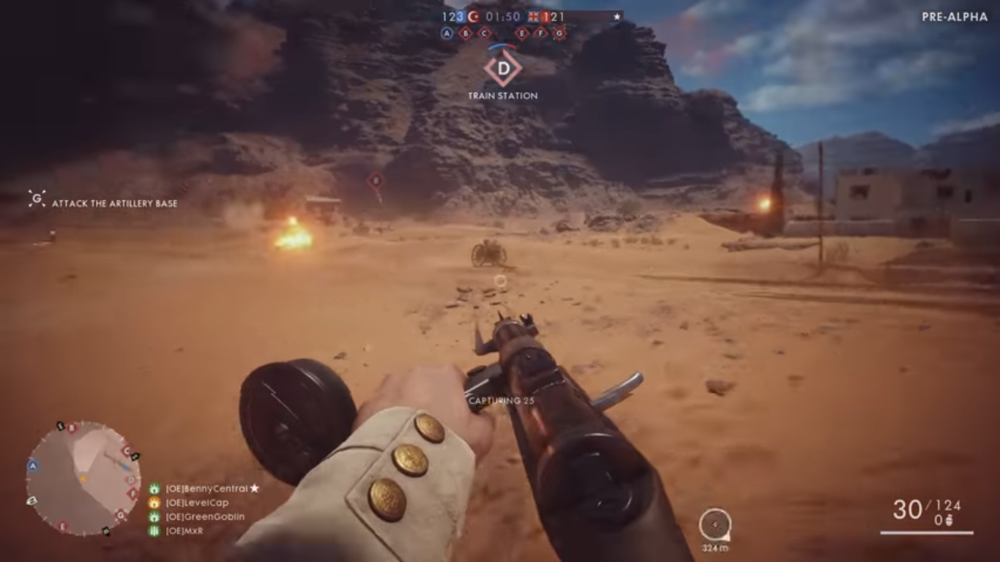

Battlefield 1 is a unique speciman, while there's been an overabundance of World War 2 shooters over the years
this game is set in the First World War, something relatively unheard of, most people don't know exactly World War 1 even happened, I'd played games set
in the American Civil War before I'd played a World War 1 game
While I haven't delved into the single player campaign too much, The Multiplayer is where the game really shines, it follows the usual Battlefield premise, you play as various factions of a war in one of several game modes (conqeust, team deathmatch etc.) Surprisingly, France and Russia don't feature here, but Austria-Hungary and Italy do, the variety of weapons is rather lacklustre compared to the other games as well but this might be to preserve historical accuracy.
A bit more slow-paced than the other big shooters like Call of Duty or Halo, Battlefield focuses more on strategy and teamwork, this isn't a run and gun game, although blasting away with the rocket launchers can be effective. There are 4 classes with their own weapon types and equipment, Assault (Sub Machine Guns, shotguns) Medic( Rifles, Health boosts, explosives ) Support( Large Machine Guns) and Scout (Snipers)
A good move forward for the series, the season pass system that EA loves still annoys me somewhat and the lack of weapon variety lets it down slightly.